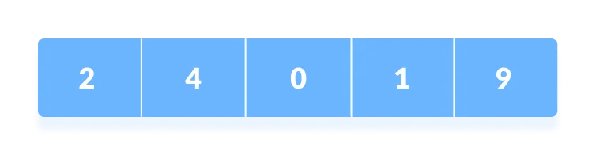
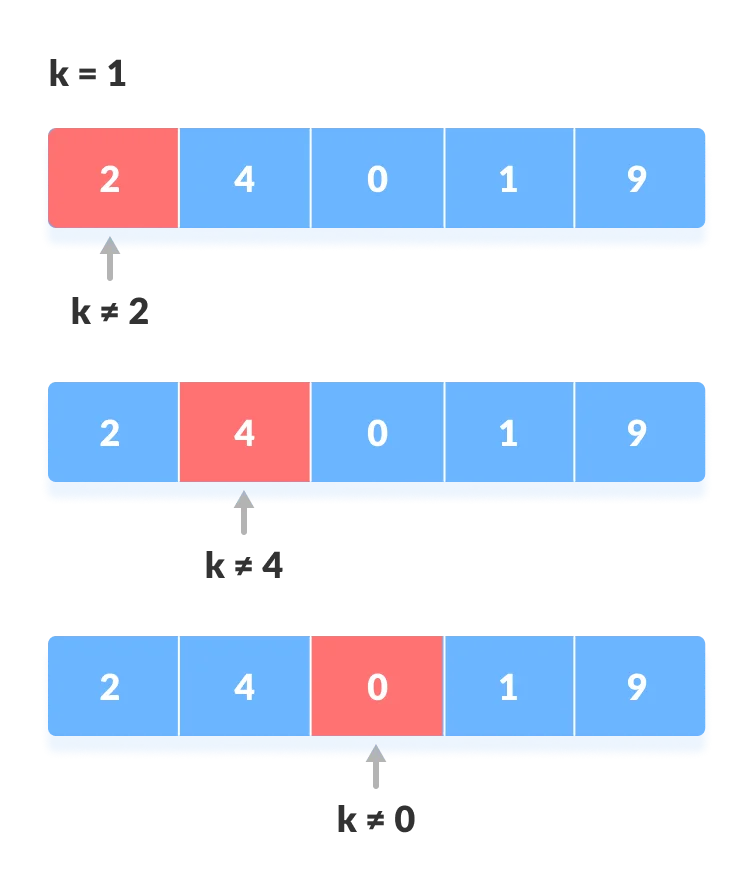
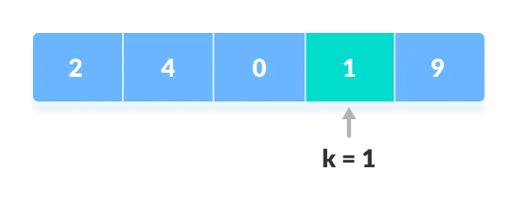
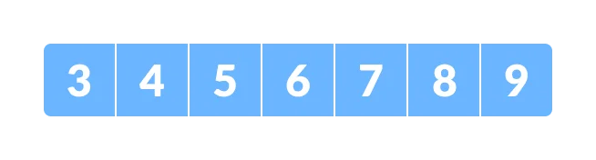
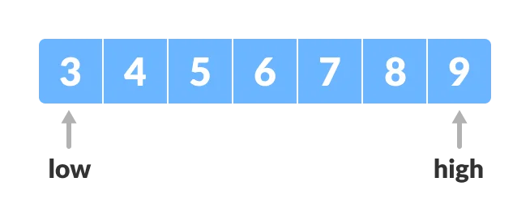
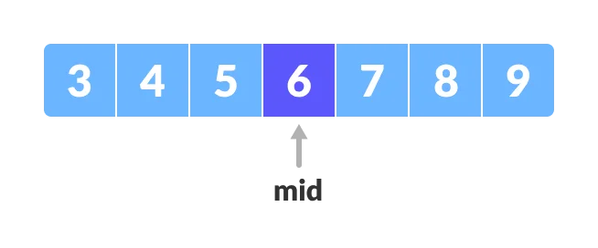
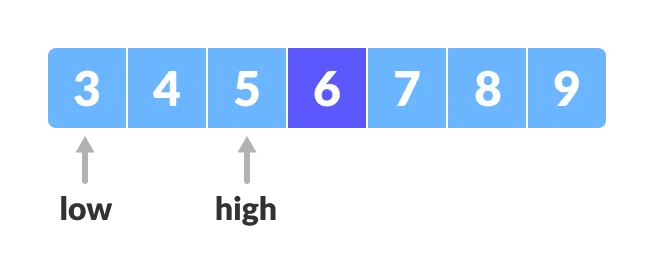
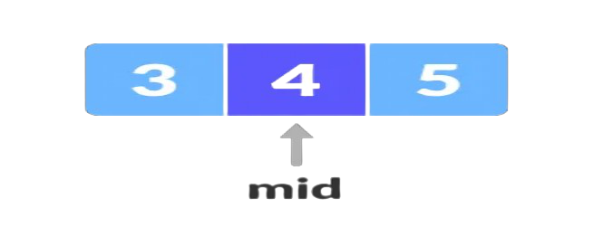

My Posts
Searching
#Searching is a technique of finding an element in a given list of clements. List of
elements that could be represented using an :
(a) Array (b) Linked List (c) A binary tree (d)AB-tree Elements (e)Heap
Searching technique should be able to locate the
element to be searched as quickly as possible. Many a time, it is necessary to search a
list
of records to identify a particular record. Usually, each record is uniquely identified
by
its key field and searching is carried out on the basis of key field. If search results
in
locating the desired record then the search is to be Successful. Otherwise, the search
operation is said to be unsuccessful. The complexity of any searching algorithm depends
on
number of comparisons required to find the element. Performance of searching algorithm
can
be found by counting the number of comparisons in order to find the given element.
Search Techniques
#Some of the standard searching techniques, include :
1.Sequential search 2. Binary search
Types
linear/Sequential Search
1.Sequential Search :
In sequential search elements are examined sequentially starting from the first clement.
The
process of searching terminates when the list is exhausted or a comparison results in
success.
Algorithm for searching an element 'key' in an array 'a[ ]' having n elements :
The search algorithm starts comparison between the first element of a[ ] and "key". As
long
as a comparison does not result in success, the algorithm proceeds to compare the next
element of "a[ ]" with "key". The process terminates when the list is exhausted or the
element is found.
#'C' function for sequential search.
int sequential_search(int a[], int key, int n)
{
int i = 0;
while (i < n)
{
if (a[i] == key)
{
return (i);
}
i++;
}
return (-1);
}
The function returns the index of th element in 'a[ ]' for successful search. A value "-1" is returned if the element is not found.
Array to be searched for
1. Start from the first element, compare "k" with each element "x".
2. If "x == k", return the index.
3. Else, return "elements not found"
#Complete program for linear search
// Linear Search in C++
#include
using namespace std;
int search(int array[], int n, int x) {
// Going through array sequencially
for (int i = 0; i < n; i++){
if (array[i] == x){
return i;
}
return -1;
}
};
int main() {
int array[] = {2, 4, 0, 1, 9};
int x = 1;
int n = sizeof(array) / sizeof(array[0]);
int result = search(array, n, x);
if(result == -1){
cout << "Element not found" ;
}
else{
cout << "Element found at index: "<< result;
}
}
Binary Search
2.Binary Search :
Linear search has a time complexity O(n). Such algorithms are not suitable for
searching when number of elements is large.
Binary search exhibits much better timing
behaviour in case of large volume of data with timing complexity : O(log2 n)
Number of comparisons for n = 220 (1 million)
Sequential search (in worst case) = 220
Binary search (in worst case) = log 22 20= 20 comparisons.
Linear search (sequential search) may need 1 million comparisons for searching an element in
an array having 1 million elements. Binary search will require, just 20 comparisons for the
same task. Binary search uses a much better method of searching. Binary search is applicable
only when the given array is sorted.
1.This method makes a comparison between the "key" (element to be searched) and the middle
element of the array.
2.Since elements are sorted, comparisons may result in either a match or comparison could be
continued with either left half of elements or right half of the elements.
3.Left half of elements could be selected by simply making j = c-1
4.Right half of element could be selected by simply making i = c+1
5.Process of selecting either the left half or the right half continues until the element is
found or element is not there.
# 'C' Function for binary search (Non-recursive)
int bin_search(int a[], int i, int j, int key){
int c;
c = (i + j) / 2;
while (a[c] != key && i <= j){
/* search as long as element is not found and it could be there*/
if (key > a[c]){
i = c + 1; // select right half
}
else{
j = c - 1; //select left half
}
c = (i + j) / 2;
}
if (i <= j){
return (c);
}
return (-1);
}
1.Let "x = 4" be the element to be searched :
2.Set two pointers low and high at the lowest and the highest positions respectively.
3.Finding the middle element "mid" of the array i.e., " arr[(low + high)/2] = 6 ".
4.If " x == mid ", then return " mid ",compare the element to be searchedwith " m ".
5.If " x > mid ", compare " x " with the middle element of the elements on hte right side of " mid ". This is done by setting " low " to " low = mid + 1".
6.Else, compare " x " with the middle element of the elements on the left side of " mid ". This is done by setting " high " to " high = mid - 1".
7.Repeat steps 3 to 6 until low meets high.
 - Copy.png)
8." x = 4 " is found.
# Complete program for Binary Search
// Binary Search in C++
#include
using namespace std;
int binarySearch(int array[], int x, int low, int high) {
// Repeat until the pointers low and high meet each other
while (low <= high) {
int mid = low + (high - low) / 2;
if (array[mid] == x)
return mid;
if (array[mid] < x)
low = mid + 1;
else
high = mid - 1;
}
return -1;
}
int main(void) {
int array[] = {3, 4, 5, 6, 7, 8, 9};
int x = 4;
int n = sizeof(array) / sizeof(array[0]);
int result = binarySearch(array, x, 0, n - 1);
if (result == -1)
cout<<"Not found :" ;
else
cout<<"Element is found at index %d", result);
}
Selection of Searching Algorithms
#Selection of Searching Algorithm
1.Linear search should be used when data is not sorted. A linear search may require maximum of N
(no. of elements) comparisons.
2.Linear search is found to be very costly for large database.
3.Binary search should be used when data is sorted.